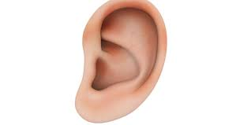

कान

कान अधिकांश जीव जंतुओं के शरीर का आवश्यक अंग हैं। इस लेख में मानव शरीरसे संबंधित उल्लेख है। मनुष्य में एक जोड़ी कर्ण सिर के पार्श्वों में स्थित होते हैं। ये सुनने तथा शरीर का सन्तुलन बनाए रखने का कार्य करते हैं। प्रत्येक कर्ण के तीन भाग होते हैं।
- बाह्य कर्ण
- मध्य कर्ण
- अन्तः कर्ण
बाह्य कर्ण
यह कान का सबसे बाहरी भाग होता है। इसके स्वयं दो भाग होते हैं-
- कर्ण पल्लव या पिन्ना
- बाह्य कर्ण कुहर
कर्ण पल्लव
यह कान का बाहरी पंखे के समान भाग होता है। यह पेशियों तथा स्नायुओं से सिर से जुड़ा रहता है। कर्ण पल्लव के भीतरी ओर मुड़ी कगार को कर्ण कुण्डलिनी तथा सबसे निचले कोमल भाग को कर्ण पालि कहते हैं। पिन्ना ध्वनि तरंगों को एकत्र करके कर्ण कुहर में भेजता है।
बाह्य कर्ण कुहर
यह कर्ण पल्लव के आधार भाग से अन्दर की ओर टैम्पोरल अस्थि से घिरी लगभग 2.5 सेंटीमीटर लम्बी नलिका होती है। इसके भीतरी सिरे पर कर्ण पटल झिल्ली या कान का पर्दा जुड़ा रहता है। इसकी सतह पर तेल ग्रन्थियाँ तथा सेरूमेन ग्रन्थियाँ होती हैं। इनसे कर्णमोम स्रावित होता है। यह कान में धूल कण, कीटाणुओं को रोकता है।
मध्य कर्ण
मध्य कर्ण कान का वह भाग है जो बाह्य और अन्तःकर्ण के मध्य में स्थित होता है और मध्य कर्ण कहलाता है। इसके निम्न भाग होते हैं-
कण्ठ कर्ण नली
मध्यकर्ण में टेड़ी, पतली एवं तंग नली होती है, जिसे कण्ठ कर्ण नली कहते हैं। इसका पिछला सिरा मुखगुहा में खुलता है। इसके द्वारा कर्ण पटह के दोनों ओर वायु दाबसमान रखा जाता है, जिससे कान का पर्दा सुरक्षित रहता है।
कर्ण गुहा
कण्ठ कर्ण नली के ऊपर मध्यकर्ण गुहा पाई जाती है। इसमें तीन छोटी अस्थियाँ पाई जाती हैं। इनका क्रम बाहर से अन्दर की ओर होता है। पहली अस्थि हथौड़े के आकार की मैलियस, दूसरी निहाई के आकार की अस्थि इनकस, तीसरी रकाब के आकार की अस्थि स्टैपीज होती है।
अन्त कर्ण
यह कान का अन्तिम भाग होता है। इसे कलागहन कहते हैं। यह एक सफ़ेद रंग के द्रव में तैरता रहता है जिस पैरीलिम्फ कहते हैं। कलागहन के अन्दर भरे द्रव को एण्डोलिम्फ कहते हैं। कलागहन के तीन भाग होते हैं-
अर्द्धचन्द्राकार नलिकाएँ
ये संख्या में तीन होते हैं तथा यूट्रिकुलस से जुड़ी रहती हैं। प्रत्येक नली परस्पर समकोण बनाती हुई जुड़ी होती हैं। इनमें दो नलियाँ खड़ी तथा एक क्षैतिज होती है। इनके फूले स्थानों को ऐम्पुला कहते हैं। इनमें आटोकोनिया नामक कैल्शियम कार्बोनेट कण तथा संवेदी रोम पाए जाते हैं। ये सन्तुलन का कार्य करते हैं।
वैस्टीब्यूल
यह भाग अन्त कर्ण के मध्य में स्थित होता है। इसमें एक झिल्ली से ढँका बड़ा अण्डाकार छिद्र होता है। यह भाग अन्त कर्ण के प्रथम भाग को अन्तिम भाग से जोड़ता है।
कॉक्लिया
यह अन्त कर्ण में पाए जाने वाला घोंघे के समान कुण्डलित भाग होता है। इसके अन्तिम सिरे पर स्रवण नाड़ी स्थित होती है। जो मस्तिष्क के अग्र भाग से सम्बन्धित होती है।
कान के कार्य
- सुनने की क्रिया
ध्वनि तरंगों के पास की वायु में कम्पन पैदा हो जाते हैं। ये कम्पन जब कान के बाहरी भाग पिन्ना से टकराते हैं तो यह उन्हें एकत्रित करके कर्णनलिका में भेज देता है। यहाँ प्रवेश करने पर ये ध्वनि-कम्पन कान के पर्दे से टकराते हैं और तब मध्य कर्ण की हड्डियों में भी ठीक वैसे ही कम्पन पैदा हो जाते हैं जैसे कि प्रारम्भ में हुए थे। ये कम्पन्न यहाँ पर अपनी तीव्रता को लगभग दस गुना बढ़ाकर आगे बढ़ते हैं और अण्डाकार छिद्र के अन्दर प्रवेश कर कान के अन्दर उपस्थित द्रव में भी कम्पन उत्पन्न कर देते हैं। इस प्रकार ये कम्पन कॉक्लिया से होते हुए आगे बढ़ते हैं और श्रवण तन्त्रिका के सिरों को प्रभावित करते हैं। तुरन्त ही ये सिरे इनकी सूचना मस्तिष्क के श्रवण केन्द्र को देते हैं और व्यक्ति को सुनाई देता है।
- शरीर का सन्तुलन बनाए रखना
कान के अन्दर अन्त कर्ण में एण्डोलिम्फ भरा रहता है। इसमें ऑटोकोनिया नामक छोटे-छोटे कण उपस्थित रहते हैं। शरीर के असन्तुलित होने पर ये कण यूट्रीकुलस के श्रवण कुट के संवेदी रोमों को संवेदित कर देते हैं। श्रवण तन्त्रिका के तन्तु इस संवेदना को मस्तिष्क में भेजते हैं। मस्तिष्क उपयुक्त प्रतिक्रिया की प्रेरणा शरीर की कंकाल पेशियों को भेजता है। ये पेशियाँ संकुचित होकर शारीरिक सन्तुलन स्थापित करती हैं।